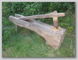

Dom nr 175 w ¯arówce zamieszka³y dawniej przez Anielê (z d. Cichoñ) i Leona Prygê.
Obecnie w³asno¶æ ich wnuka Zygmunta Michoñskiego.
14 zdjêæ, autor Miros³aw Wnuk, sierpieñ 2008. Strona g³ówna: zarowianie.org.pl
Kliknij zdjêcie, aby powiêkszyæ widok.
